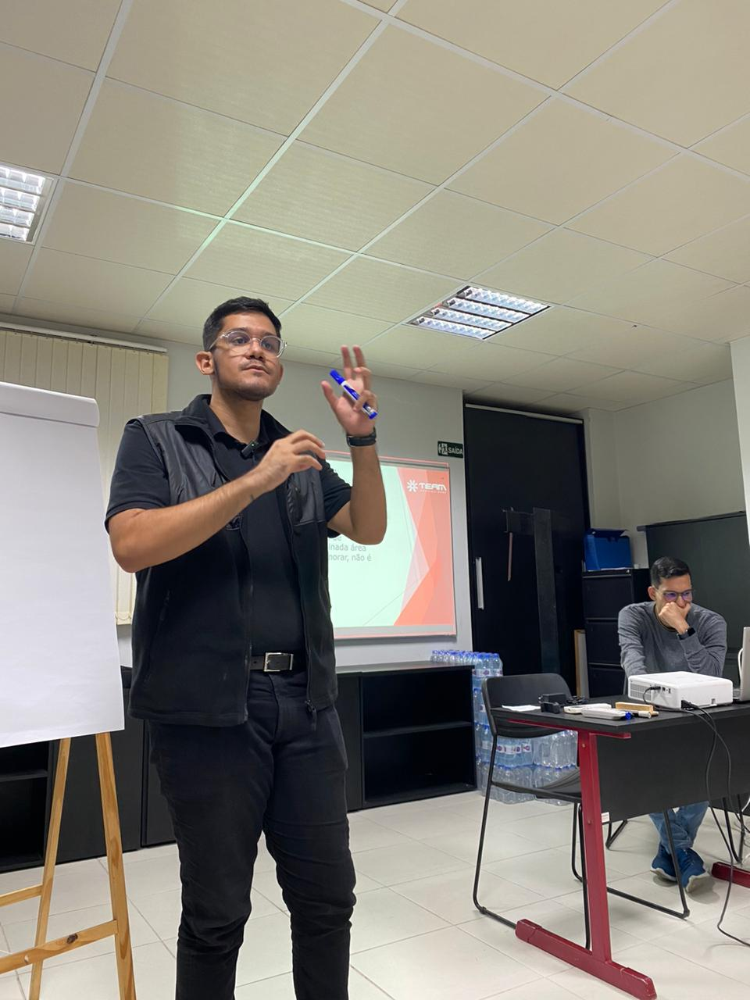

Lourival Teixeira Pinheiro Neto
Educação
- Ciências Contábeis - Anhaguera - 2028;
- Aux. Administrativo - CEBRAC - 2025;
- Former Exchange Student - MoutainView High School - New Zealand.
Experiência

Cursos
| nome | mes | categoria | carga_horaria | instituicao |
|---|---|---|---|---|
| Git e Github | Outubro | Tecnologia | 20h | Curso em Vídeo |
| Inteligência emocional 4.0 | Outubro | Soft Skill | 20h | Conquer Business School |
| Controladoria | Outubro | Contabilidade | 6h | Cefis |
| Demonstrações Contábeis | Outubro | Contabilidade | 5h30 | Cefis |
| Iniciação Contábil | Agosto | Contabilidade | 2h40 | Cefis |
| Plano de Contas Contábil | Agosto | Contabilidade | 1h50 | Cefis |
| Rotinas de Auxiliar Administrativo | Agosto | Contabilidade | 2h10 | Cefis |
| Simplifica Excel Express | Junho | Microsoft Office | 10h | Simplifica Treinamentos |
| Python - Mundo 1 | Junho | Tecnologia | 40h | Curso em Vídeo |
| Python: noções introdutórias | Junho | Tecnologia | 3h | Ada Tech |
| Certificação Lean Seis Sigma White Belt | Maio | Administração | 8h | FM2S |
Idiomas
- Inglês: C2 Profiency Level (EF SET certificate);
- Espanhol: Intermediário;
- Alemão: básico (DW DEUTSCH).